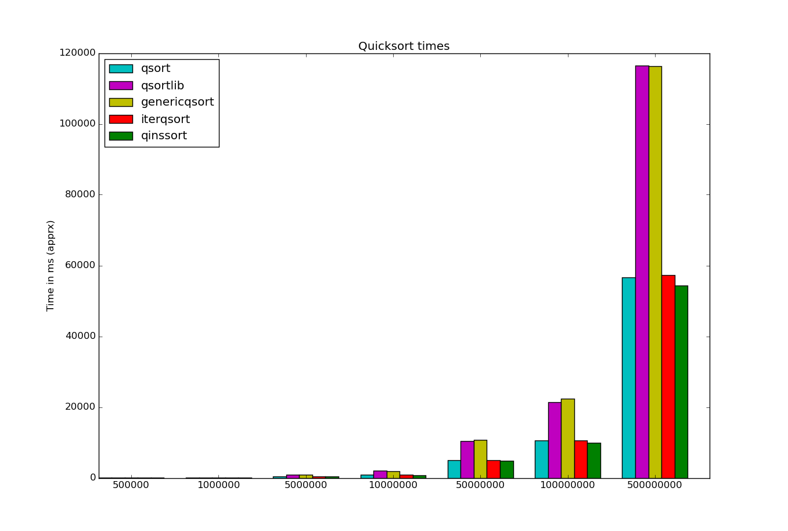

New REPLS
A few days ago I added created 4 new repls of 4 of my C projects. I added repls for:
These join the one I had for my Goodreads SQLite database. So you can now try all of these out in the browser here
A few days ago I added created 4 new repls of 4 of my C projects. I added repls for:
These join the one I had for my Goodreads SQLite database. So you can now try all of these out in the browser here
I recently finished some relatively major changes and improvements to CVector.
Since the most recent changes involved actual changes to the API, both adding new functions and modifing a few existing ones, I've bumped the version up to 4.0.
Since I've never done an update post like this, and you can look at the main project page and documentation etc. for all the details I'll just sum up some changes from about the last year (since about 3.1.0 give or take):
Renaming remove to erasem occurred to me briefly, and I do appreciate the consistency, but I already had remove and theoretically not breaking existing code (even if it's just mine) is a worthy goal and I feel the english connotations of erase vs remove are appropriate here. Sigh, now I've pretty much talked myself into adding an erasem wrapper macro that calls remove.
I've been learning SQL (and particularly SQLite) slowly and casually over the last couple months and as I mentioned in my New Year's post, I want to continue that and use it in more ways and in more projects. Thus far I've read through a lot of SQLite documentation, done a decent number of Hackerrank problems, gone through the W3Schools questions, and more importantly used SQLite in some random Python scripts and added a SQLite based implementation to CPIM2.
I realized soon after starting with SQL that one dataset that would be fun to play with would be my Goodreads library. Using their export function which gives you a csv file and a relatively simple Python script, I could create a SQLite3 database. Since I had another few books I wanted to read before the end of the year and plenty more SQL exercises and such to occupy me I decided to wait so I could have all of 2019 available for analysis and statistics, and finally it's time.
I've been using Goodreads for several years now and while I've probably missed a book here and there, I've been reasonably consistent about adding books since I first created an account. When I first started I added 100's of books immediately in a futile attempt to create a definitive list of every book (or at least every fictional one) I've ever read.
Given that, take my ratings for the first couple hundred or so books with a grain of salt. I have gone back and adjusted some occasionally to be more inline with my current ratings but even if I remembered all of them it's impossible to rate things perfectly, especially years or decades after you experienced it.
There are a few multi-book items in there, so items is not quite equivalent to books.
One last thing; unfortunately the goodreads export system is not perfect and for some reason does not export date_read reliably at all (just leaves it blank most of the time) so that precludes some more interesting analysis I wanted to do for the last few years.
Without further ado, here are some statistics:
| Statistic | Result |
|---|---|
| total_items | 515 |
| total_pages | 197367.0 |
| avg(pages) | 383.982490272374 |
And here is a break down by binding (aka format):
| binding | count(binding) |
|---|---|
| Paperback | 211 |
| Kindle Edition | 152 |
| Hardcover | 70 |
| Mass Market Paperback | 58 |
| ebook | 20 |
| Audible Audio | 3 |
| 1 |
If you want to see the data and perform some SQL queries of your own (in the browser!), I put the project up on REPL so you can see it here. Just select which repl "Goodreads + SQL".
So it's that time of year again and I figured I'd publicly join in and hope that helps keep me honest. I've split the goals into Primary and Secondary. Secondary is a catchall for things that would be cool but I'm not super motivated to do and for things that I'll do naturally and really shouldn't count (like reading fiction).
Obviously some are very broad, there's some overlap and there are a lot more specific goals I have that will be covered/accomplished through say Primary 1-3.
This is kind of the whole Systems vs. Goals thing that Scott Adams and others have been on for several years. I think it's a false dichotomy; a system is a goal and most goals are systems. More than that, there's a chain for large, long term goals. For example, say my goal is to run a marathon. I'd start a year before the race with a plan to run 4-5 times a week working in a speed every other week. I'd do 5Ks, then 10Ks, and finally half-marathons every other month. Those are all systems, or (sub)goals in their own right. Even finer grained, I'd have systems for sleeping and eating right in service of those systems/goals. Basically until you get down to things that can be accomplished in a day or 2, every goal has systems. Even something done in a weekend like a game jam benefitted from goals and systems that came before (learning the tools, general experience and prior game jams) and you might have your diet and sleep specifically calibrated for a 48-72 hour develoment marathon as another system.
Sorry, that was a tangent, but it's always bothered me the whole Systems > Goals. It's just semantics and perception.
So a little over a month ago, I thought it would be cool to try out emscripten and WebAssembly with one of my students. We had previously done some "hello world" type graphics programs and a simple game port and I thought it'd be fun to see how easy (or not) it was to get those to run in the browser.
While I think it was a good exercise, and emscripten is much better than it was a couple years ago, I don't think it's ready for primetime yet. You cannot simply compile your existing graphics/game code and expect it to work. If you're lucky you only have to make a few minor changes and with an #ifdef you can use the same code for your regular executable to. If you're not, you might have to re-do your whole program because of the limitations emscripten (which are really the limitations of the browser/DOM rendering model. These include turning infinite loops into callback functions and restricting yourself to OpenGL ES 2/3 which gets translated to WebGL 1/2.
In any case, here are our results:
For some reason we could not get file loading to work and the movement in sdl2_interactive is very inconsistent for no reason that we could determine. We originally wanted to port simulate which we had previously already ported to C but due to the mainloop callback requirement, it would have required a complete redesign.
Useful links:
I've posted a new project, opengl_reference.
As it says, it's going to be a growing repo of small to medium OpenGL programs. Some will be very simple examples, almost tutorial type programs. Some will demonstrate 1 or 2 specific features of OpenGL. Some will show specific aspects/behavior of OpenGL (like it's left-handed canonical coordinate system or what happens when you draw lines on the exact edges of the view volume). Finally, a couple will be template programs, meant to be copy-pasted to start new projects of a certain type.
In the course of developing these, I'll be building my OpenGL helper libraries (math, mesh/buffer/texture/shader management etc.) and refining/improving them. I'll also be using/learning glm but I prefer using/writing my own for various reasons.
So I updated my website yesterday(I know it still needs a lot of work I'm not a web developer) and I added several project pages including a new one.
I've been wanting to learn PySDL2 for a while now and a couple months ago I finally had the motivation to start. To learn it I decided to port all the games (and other programs) from "Making Games with Python & Pygame" by Al Sweigart.
Al Sweigart, if you haven't heard of him, has 4 python books and all of them are available for free online along with the source code. I encourage you to check them out,
I got a little less than half way done before I felt comfortable enough to move on, starting my own simple games. Soon after I was on vacation with family for about 10 days during the holidays so by the time I got back it was even less on my mind and I haven't touched it since.
I've added a README and released what I have to Github/Bitbucket because I think it'll be useful to people. I'm thinking about starting a small crowdfunding campaign, probably on indiegogo, to motivate me to finish it if there's enough interest.
Anyway the project page is here for those interested.
So I've resolved once again to try to post to this blog once a week or so. Hopefully it'll help motivate me to make more progress on my programming projects so I'll have something to say. In addition, maybe I'll eventually make this site look like it wasn't built in the 90's.
STATUS UPDATE 2/4/16: epic failure, recommitting.
Anyway, I've been tinkering with my collection of sorting algorithms and the benchmarking program I wrote for them years ago. I've also been looking at how to display the timing results in a pretty graph. For now I'm playing with matplotlib in python.
On to the coding! I wanted to see how my algorithms stacked up against the C stdlib qsort function (and C++'s std::sort but I only made a graph for C). Since it uses a C style generic quicksort I decided to write my own version with the same interface and compare all my quicksort variations.

As you can see, the 3 non-generic implementations 1, 4 and 5 all perform roughly the same, especially at higher N, while the 2 generic versions are about half as fast due to the extra overhead involved. My generic version is a tad slower but I think I'll try adding insertion sort for smaller groups and see if that makes the difference.
You can see the code I used here. I compiled it as is but am only talking about main.c, or benchmark, not cppbenchmark.
Running this from the build directry (after build and running benchmark)
will generate the graph. I had to expand and save it manually ...
I need to figure out sizing the whole image programmatically.
python3 ../plotbarchart.py
I know there are a million lists of common programming mistakes (for almost every language) but I thought I'd do one myself. Hopefully in writing about my most common mistakes I'll quit making them or at least remember to check for them first when my code doesn't work. So . . .
1.) Forgetting a semi-colon.
I know it's the most obvious mistake in C/C++. Whether it's at the end of a class, struct, do-while loop or just a normal statement, I always seem to forget at least one semi-colon the first time I compile something.
2.) Adding a semi-colon to the end of an if statement.
I think one time I made this mistake was in my Watering Lawn project. I think I had the following (lines 100-104 in wateringlawn.cpp):
if(temp1==temp2);
{
minsprinks=0;
break;
}
3.) Putting one equal sign in an if statement.
Yes I recently commited this mistake for I think the first time ever. I was just typing too quickly and without really focusing. I realize that there may be some edge cases where you might actually want an equal sign in if statement but I can't think of any and I haven't had any so far.
4.) Not looking at the entire line.
This is especially annoying if I've spent quite a bit of time staring at the line trying to figure it out after already having spent time isolating which line it is. I had the following line and of course was getting an error. Thing is I had already fixed the quotes (double to single) for the '('. I was so focused and frustrated that the compiler was complaining about something I'd already fixed I didn't notice the ones around the A.
if(x=='(') mystack.push("A");
See above. Sometimes I'm just not paying attention and typing to fast.
6.) Using gcc when I'm coding in C++.
Duh.
7.) Not keep track of exactly where my pointers are pointing
(and realizing when things are pointing at the same thing instead of different things passing C strings around etc.)
8.) Not using sizeof when using memory functions in C.
(I know you can leave it out for primitives like char and int but I should just always use it so I won't forget for the complex structures).
9.) Forgetting a break statement.
10.) Forgetting to increment a counter.
Or similarly forgetting to set the pointer to the next one while looping through a linked list.
Most of these (especially 7-10) I made while writing C PIM. Hopefully I can use these as a self checklist or something.
EDIT: 11.) Forgetting to close a file stream
EDIT 2: 12.) Allocating the wrong amount of memory
EDIT 3: 14.) Type problems (wrong conversions, underflow and overflow in arithmetic both integer and real)
#include <stdio.h>
int main()
{
printf("Hello World");
return 0;
}
blah blah blah
Testing testing just putting some content here
Testing testing just putting some content here
© Robert Winkler, 2010 - 2019. Site design based on an old version of Michael Fogelman's awesome site.